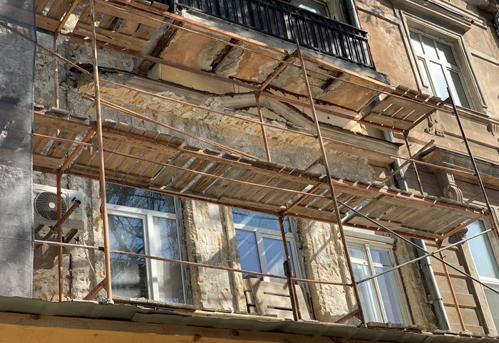

Реставрація Одеси
Щоб зберегти автентичність міста — реставруємо автентичні міські артефакти завдяки меценатам з Одеси та світу.

З серпня 2020 відновлено:
- дві шрифтові вивіски на Толстого 5,
— два розписи, одна падуга і двері під'їздів будинку Балашева на Лютеранському провулку,
— двері будинку спадкоємців канатозаводчика Новікова на Дерибасівській.
Зараз ми працюємо над відновленням найскладнішого плафона, що об'єднує реставрацію картини, падуги, декоративних кронштейнів і ремонт покрівлі над стелею з картиною.